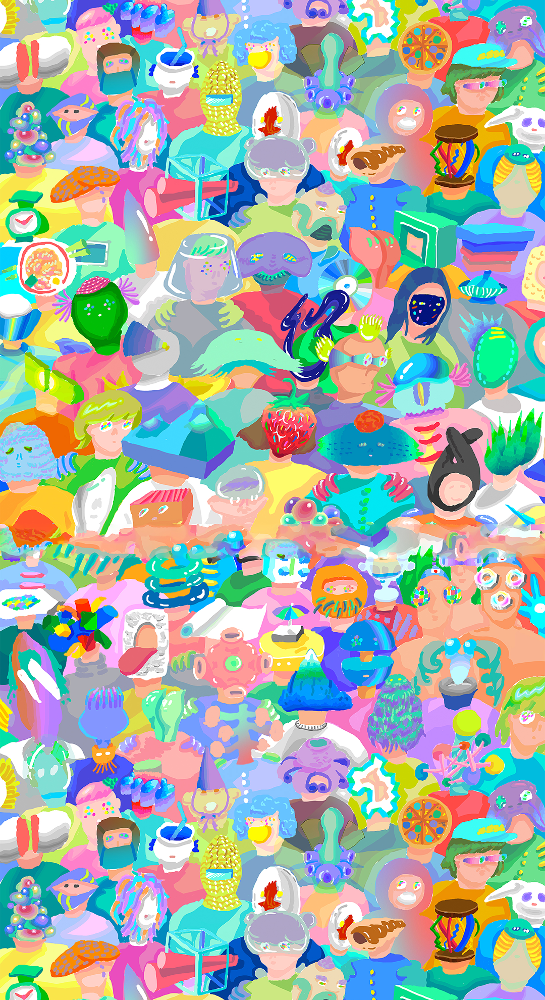

「sél」という発音記号には、“細胞”を表す「cell」と”宣伝する”「sell」という意味が含まれています。メディア芸術の持つ、枠にはまることのない可能性を、私たちは、日々生まれ変わる細胞に重ね合わせました。
本展示は、学内で課題として制作されたデジタルな映像作品から、手書きのアニメーション、 観客が空間を体験する作品までが揃う、総勢約40名の学生による展覧会です。

「sél」という発音記号には、“細胞”を表す「cell」と”宣伝する”「sell」という意味が含まれています。メディア芸術の持つ、枠にはまることのない可能性を、私たちは、日々生まれ変わる細胞に重ね合わせました。
本展示は、学内で課題として制作されたデジタルな映像作品から、手書きのアニメーション、 観客が空間を体験する作品までが揃う、総勢約40名の学生による展覧会です。
ゲストに吉田ユニさんをお招きしてトークイベント開催!!
吉田ユニさんは、ラフォーレ原宿のキャンペーンビジュアルや、きゃりーぱみゅぱみゅ、木村カエラなどの著名アーティストの作品を数多く手がけるアートディレクター、グラフィックデザイナー。
>>more info
1/23(Fri)
18:30〜
オープニングレセプション／トークイベント @ B1シンポジア
レセプションではフードデザインラボによるフード作品が振る舞われます
〒106-0032
東京都港区六本木5-17-1 AXISビル 4階
東京メトロ日比谷線：六本木駅3番出口
都営大江戸線：六本木駅 3・5番出口
六本木交差点から外苑東通りを東京タワー方面へ徒歩約8分